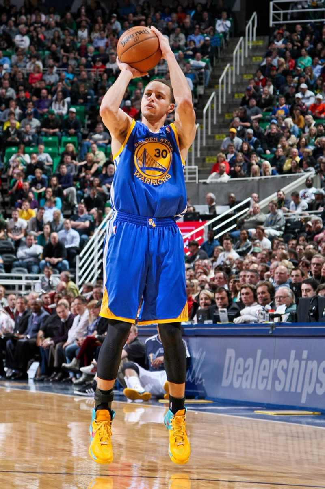

Michael Jordan
| Michael Jordan is one of the most well known basketball players. If you ask a random person to name a basketball player, they would most likely suggest Michael Jordan. Michael Jordan is a former American basketball player who led the NBA team "Chicago Bulls" to not one, not two, but SIX NBA championships and won the Most Valuable Player (MVP) Award five times! With five regular-season MVPs and three All-Star MVPs, Jordan became the most decorated player in the NBA. Attaining these accolades were by no means an easy feat, as players would have gone through countless of blood, sweat and tears to be able to beat others and rise up to be the best of the best. I took special attention to one of his many quotes "I've failed over and over and over again in my life and that is why I succeed.". This quote resonated me as I did not expect failure to be your stepping stone to greatness, as ironic as it sounds. He is definitely one of the many basketball greats to be acknowledged as he continues to be an inspiration to many up till this day! | |
Kobe Bryant
| Kobe Bryant is arguably the most well known basketball player next to Michael Jordan. His death along with his 13 year-old daughter Gianna Bryant on the 26th January, 2020, due to a helicopter crash, took a major hit on not only the sports world, but on the entire globe. He was one of the most influential basketball player, being known to be an incredible hard worker who never gives up. He was a dominant scorer, who won five NBA championships and the 2008 MVP Award with the Los Angeles Lakers. Although later seasons were marred by injuries, he surpassed Michael Jordan for third place on the NBA all-time scoring list in December 2014 and retired in 2016 after scoring 60 points in his final game. Just like anybody else, his achievements did not come easy. Kobe's former teammates claimed that he would stay behind after every training session to work on his craft, and he would also head to the court on the following day at around 5am to commence training, being the last to leave and first to arrive. |
| |
Stephen Curry
| Stephen Curry is known to be one of the greatest shooters alive in the NBA right now. He is such an influential player so much so that many other players have started to shoot more beyond the 3-point line in today's game. He broke numerous 3-point records, such as having the most made 3s in a regular season, being the NBA 3-point field goal leader for 6 years and being the 3-point contest champion in 2015 and 2021. He has also won 2 MVP awards back-to-back in 2015 and 2016, with him in 2016 being the only unanimous MVP selection in league history. Many NBA players knew that this man was destined for greatness, as soon as they found out he was a shooting machine. His range is just that unbelieavable, having made mind blowing half court shots during a buzzer beater (shooting the ball before the shot clock runs out in attempt to score a point). He also holds the franchise record of scoring the most points in his team, the Golden State Warriors. It is very likely that he will make it to the NBA hall-of-fame by the time he retires, since he has already broken countless of records at an arguably young age. | |
|  | |
 | |
LeBron James
| LeBron James is currently one of the greatest players in the NBA right now. Being nicknamed "King James", he truely is the King of The Court. He led the Miami Heat to NBA titles in 2012 and 2013 and won another championship with Cleveland in 2016, before joining the Los Angeles Lakers in 2018 and winning another championship in 2020. James first garnered national attention as the top high school basketball player in the country. With his unique combination of size, athleticism and court vision, he became a four-time NBA MVP. During the 2003-04 season, James made history when he became the first member of the Cavalier franchise to win the NBA Rookie of the Year Award. He also became the youngest player — at only 20 years old — to receive this honor. Recently, he casted in the movie "Space Jam", being the sequel to the first installment that featured Michael Jordan. "The Space Jam collaboration is so much more than just me and the Looney Tunes getting together and doing this movie,” James told The Hollywood Reporter. “It's so much bigger. I'd just love for kids to understand how empowered they can feel and how empowered they can be if they don't just give up on their dreams." There is no doubt that he will be a hall of famer by the time he retires from the NBA after achieving insurmountable greatness. | |
 | |
 |